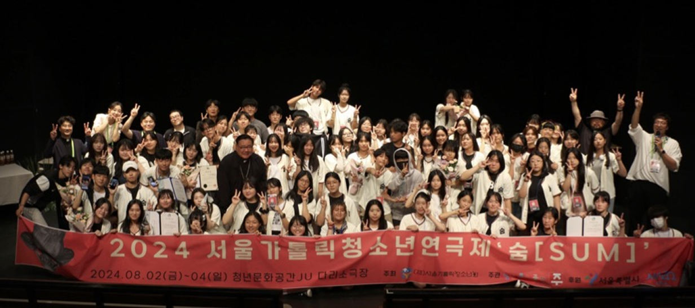

서울가톨릭청소년연극제는 (재)서울가톨릭청소년회가 주최하고 청년문화공간JU가 주관하는 청소년 연극 축제입니다. 경쟁이나 시상보다, 학생들이 직접 자신들의 이야기를 연극으로 표현하는 방법을 배우고 다른 학생들과 함께 작품을 만들어가는 과정 자체에 무게를 두는 장기 프로젝트로서 학생들과 교사, 학부모 모두에게 큰 호응을 얻고 있습니다.
서울가톨릭청소년연극제는 편중되지 않는 다양한 목소리를 담아내기 위해 참가팀 선정에 있어서도 제약을 최소화하고 있습니다. 일반 학교뿐만 아니라 청소년시설, 연합동아리, 대안학교 등 청소년들이 연극으로 함께 뜻을 모은 단체라면 누구에게나 참가기준이 열려있으며 작품 내용면에서도 다채로운 구성을 지향합니다.
참가작 역시 기존 연극 작품을 그대로 답습하기보다 청소년들이 직접 자신들의 생각을 자신들만의 표현으로 써내려간 창작극을 권장함으로써 학생들의 보다 진솔한 목소리에 귀를 기울이고 있습니다. 심사 기준 역시 기성 성인연극에서 기대하는 유려함과 능숙함보다 자신들의 이야기를 얼마나 독립적이고 창의적으로 펼쳐내는지에 중점을 두고 있습니다.
참가신청 공고 및 접수
참가신청 접수 마감
참가작 선정 및 발표
창작 워크숍 진행
학교방문 진행
학교방문 진행
공고일부터 2026년 4월 3일(금)
2026년 4월 3일(금) 자정
2026년 4월 중
2026년 5월 30일(토) 11시
2026년 6월 ~ 7월 중
2026년 8월 7일(금) ~ 9일(일)
①
연극제 참가 신청 방법
홈페이지 게시판-사업게시판-2026년 서울가톨릭청소년연극제 참가서류 제출
②
제출방법
이메일 : youth@yju.or.kr
우편발송 : 서울특별시 마포구 월드컵북로 2길 49, 청년문화공간JU 1층 기획운영실 연극제담당자 앞
②
공연 관람 신청 방법
- 전화 : 02-338-7832 서울가톨릭청소년연극제 담당자
- 이메일 : youth@yju.or.kr
- 온라인접수 : 청년문화공간JU 페이스북 및 서울가톨릭청소년연극제 인스타그램 메시지
[페이스북 : https://www.facebook.com/ju.youthcenter/ , 인스타그램: @s.c.y.t.f ]
②
공연 관람 신청 내용
- [이름 / 공연 관람일 / 연락처 / 인원수] 기재